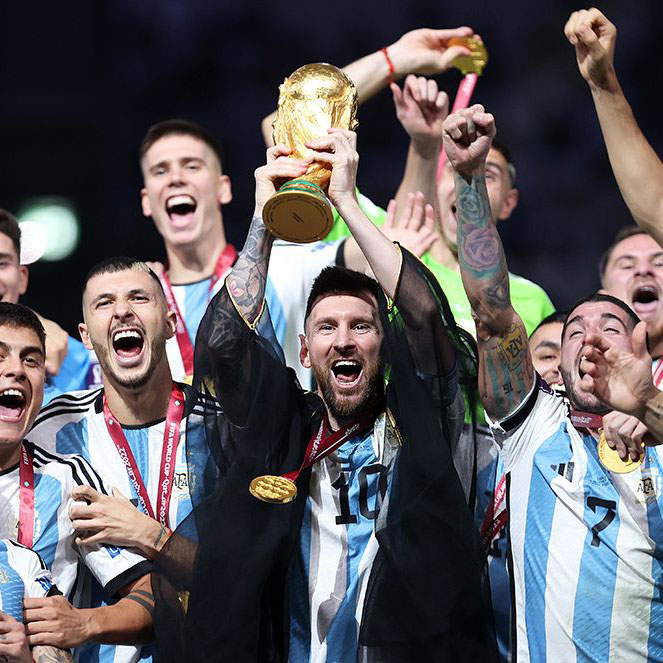

Аргентина победитель чемпионата мира в Катаре
Аргентина неудачно стартовала на чемпионате мира после неожиданного поражения в первом матче от Саудовской Аравии. Месси был единственным бомбардиром своей команды, но этого было недостаточно, так как они проиграли со счетом 2:1.
Команда отыгралась в матче с Мексикой со счетом 2:0. Месси и Энцо Фернандес поразили ворота во втором периоде.
В среду (30 ноября) они одержали решающую победу над Польшей со счетом 2:0 и вышли в 16-й раунд.
"Альбиселесте" лидировали большую часть матча против Австралии, а Месси и Хулиан Альварес забили голы на 35-й и 57-й минутах соответственно. Австралия сделала запоздалый рывок, забив на 77-й минуте, но в конечном счете Аргентина одержала верх.
Затем команда пережила триллер 9 декабря против голландской команды, которая не проигрывала более года, чтобы выйти в полуфинал. Счет в дополнительное время был 2:2, а Аргентина выиграла со счетом 4:3 по пенальти.
"Ла Альбиселесте", казалось, набирала обороты, ведя со счетом 2:0 после голов Науэля Молины (35') и Месси (73' П).
Но затем Воут Вегхорст забил - дважды. Сначала на 83-й минуте, а затем, героически, всего за несколько секунд до конца основного времени (90+11').
Месси и его команда были агрессивны в течение 30 минут дополнительной игры, которые последовали за этим, но не смогли выйти вперед. Матч перешел в серию буллитов, где суперзвезда задал тон легким первым голом. Но промах Энцо Фернандеса на четвертом месте означал, что драма будет продолжаться вплоть до пятого и последнего выстрела Лаутаро Мартинеса.
Мартинес собрался с духом и удержал Аргентину на мировом турнире.
В полуфинале Аргентина одержала победу над Хорватией со счетом 3:0.
Месси открыл счет с пенальти на 34-й минуте, забив 11 мячей на чемпионате мира, на один опередив предыдущий национальный рекорд Габриэля Батистуты.
Пять минут спустя Хулиан Альварес сделал дубль, и Аргентина ушла на перерыв со счетом 2:0 в пользу хозяев.
И за 20 минут до конца Месси совершил завораживающую пробежку, прежде чем подставить Альвареса на свой второй гол за вечер, чтобы уничтожить все надежды на возвращение хорвата..
На своем пятом чемпионате мира 35-летний Месси наконец-то осуществил свою мечту, завоевав вторую медаль чемпионата Бразилии 2014 года.
